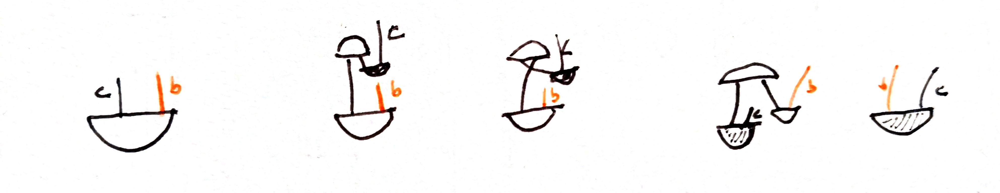

Definition
(@sharpe2000differential page 238)
A pseudo-Riemannian metric on a smooth manifold $M$ is a smooth function $q_M:TM\to \mathbb{R}$ whose restrictions $q_x:T_xM \to \mathbb R$ are all non-degenerate quadratic forms.
The metric is called Riemannian if the associated bilinear forms are positive definite.
$\blacksquare$
Another definition:
Equivalently, following notation in \cite{malament}, we can say that a (pseudo-Riemannian) metric is a smooth field $g_{ab}$ on $M$ that is symmetric and invertible, i.e., there exists other smooth field $g^{ab}$ on $M$ such that $g_{ab}g^{bc}=\delta_a^c$.
It is usually called pseudo-Riemannian or pseudo-metric if is not definite positive.
In the note dual vector space can be seen how to construct the inverse. It requires the non-degenerate condition of the metric. In fact is equivalent.
The inverse field is also symmetric:
$$ g ^ { c b } = g ^ { n b } \delta _ { n } ^ { c } = g ^ { n b } \left( g _ { n m } g ^ { m c } \right) = \left( g _ { m n } g ^ { n b } \right) g ^ { m c } = \delta _ { m } ^ { b } g ^ { m c } = g ^ { b c } $$We can watch it in diagrammatic notation:

It has associated a particular vector bundle connection in $TM$, (i.e., a linear connection) the Levi-Civita connection. See relationship parallel transport, covariant derivatives and metrics.
(This is related to the extension and reduction of a principal bundle)
We can endow $M$ with a Riemannian metric as follows: Let $\{(U_\alpha,\varphi_\alpha )\}$ be an open cover of $M$ which trivializes $TM$. On each $U_\alpha$, choose a frame for $TM|_{U_\alpha}$ and *declare* it to be orthonormal (a basis on a vector space determines a metric, see dual vector space#No natural isomorphism). Let $g_\alpha$ denote this inner product on $TM|_{U_\alpha}$. Now use a partition of unity $\rho_{\alpha}$ to splice them together, i.e. define
$$ g(u, v)=\sum_{\alpha} \rho_{\alpha} g_{\alpha}\left(D \varphi_{\alpha}(u), D \varphi_{\alpha}(v)\right) $$This is clearly symmetric; $g(u, u) \geq 0$; and $g(u, u) = 0$ iff $u = 0$. Furthermore, it is smooth, and so defines a Riemannian metric on $M$.
________________________________________
________________________________________
________________________________________
Author of the notes: Antonio J. Pan-Collantes
INDEX: